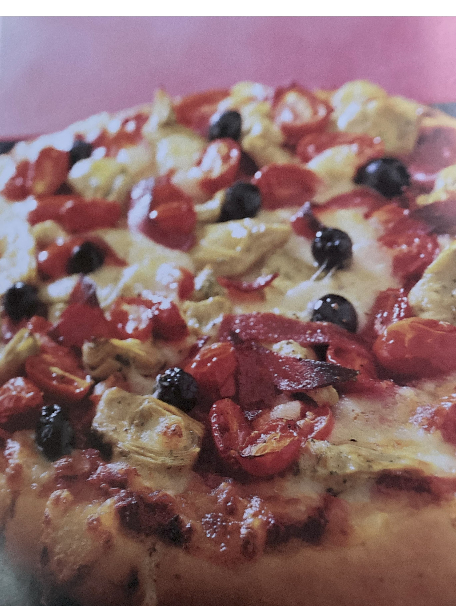

Salami, Ham and Pineapple Pizza

Ingredients
Switch to Steps
Base
-
12 oz Plain (All Purpose) Flour
-
1/2 tsp Salt
-
1 1/2 tsp Dry Yeast
-
Pinch of Powdered Sugar
-
2 Tbsp Olive Oil
Topping
-
14 oz can Chopped Tomatoes with Herbs
-
4 oz Salami or Pepperoni, cut into strips
-
10 oz Jar Seasoned Artichokes, drained
-
8 oz Baby Plum Tomatoes, halved lengthwise
-
14 oz can Diced Pineapple
-
4 oz Mozarella, diced
-
1 1/2 oz Black Olives, pitted
Steps
Switch to Ingredients
Topping
-
Place the canned tomatoes in a saucepan.
-
Simmer uncovered for 10-15 minutes, stirring occasionally.
until reduced to a thick paste.
-
Set aside.
Pizza
-
Preheat oven to 430F.
-
Mix the flour, salt, yeast and sugar in a large bowl.
-
Make a well in the center.
-
Mix the oil with 7 oz of tepid water, then gradually pour into the well,
drawing the flour from the edges to make a dough and adding more water if needed.
-
Turn out the dough onto a lightly floured surface and knead for 10 minutes,
or until smooth and elastic.
-
Roll out to a 12" round and place on a greased baking tray,
pressing with your knuckles to make a slightly raised edge.
-
Spread the cooked tomatoes over the pizza base and top
with the salami or pepperoni, artickokes, plum tomatoes, pineapple, mozarella and olives.
-
Bake in oven for 20 - 25 minutes, until golden